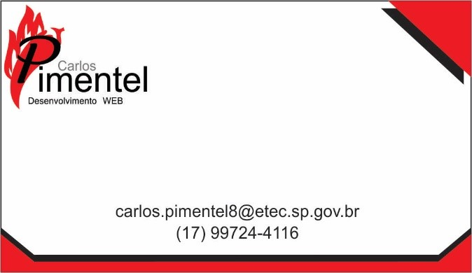

1)Composição do Logotipo:
É composto por um “P” para simbolizar o meu último nome e fazer referência a uma pimenta que está de fundo para a letra “P”, e após está escrito meu nome “carlos”, “Pimentel”
2) Paleta de Cores:
A cor vermelha remete a ardência da pimenta, que tem referência com meu sobrenome, e na cor cinza temos representado meu primeiro nome, e temos o preto que representa a dureza e a eficiência no serviço.A cor vermelha remete a ardência da pimenta, que tem referência com meu sobrenome, e na cor cinza temos representado meu primeiro nome, e temos o preto que representa a dureza e a eficiência no serviço.
3) Escolha de Fontes
Fontes escolhidas: Arial, Lucida Handwriting, Vrinda.
A fonte “Arial” foi escolhida pois remete a simplicidade, já a “Lucida Handwriting” e utilizada para representar a modernidade, e a “Vrinda” foi utilizada para fazer o logo pois se destaca entre as outras fontes.
4)Ferramentas utilizadas para composição do logo
Texto artístico
Agrupamento
Objetos
Mídia artística
5)Cartão de Visitas (frente e verso)

6)Logo em escala de cinza